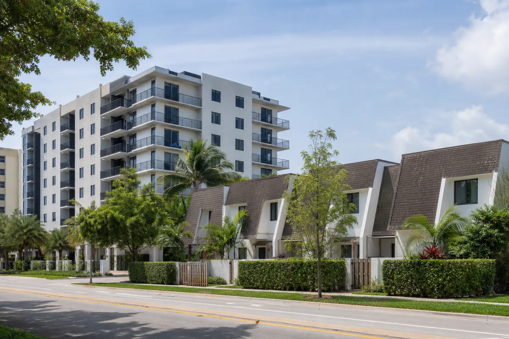

A consulta “Boca Raton custo de vida” parece simples, mas uma resposta responsável precisa separar dados com metodologias diferentes. O aluguel anunciado hoje não é igual à mediana histórica paga por todos os inquilinos, e nenhum portal conhece sua despesa com saúde, carro, escola ou dívidas.
Por isso, este guia não apresenta um único “salário mágico”. Ele mostra valores rastreáveis, explica como montar o orçamento e ajuda a decidir se Boca Raton funciona para sua renda e rotina. Para a visão nacional, consulte também o guia de custo de vida nos EUA.
Quanto custa morar em Boca Raton?
O ponto de partida é a moradia. O Zillow trabalha com anúncios disponíveis e mostrava, em 1º de agosto de 2026, média de US$ 3.200 para todos os imóveis da cidade. Já o U.S. Census Bureau informa mediana de aluguel bruto de US$ 2.508 no período 2020–2024. As duas medidas são úteis, mas não são comparáveis como se fossem o mesmo número.
| Referência | Valor | Como interpretar |
|---|---|---|
| Zillow Rentals, 1º ago. 2026 | US$ 3.200 | Média pedida entre todos os tamanhos e tipos anunciados; muda com o estoque. |
| Zillow, 1 quarto | US$ 1.950 | Média dos anúncios de um quarto na data consultada. |
| Zillow, 2 quartos | US$ 2.628 | Referência mais próxima de muitos casais e famílias pequenas. |
| Zillow, 3 quartos | US$ 4.000 | Referência para quem precisa de mais espaço; endereço e tipo de imóvel alteram muito o preço. |
| Census, 2020–2024 | US$ 2.508 | Mediana histórica de aluguel bruto; inclui contratos existentes e não representa o preço pedido hoje. |
A renda domiciliar mediana estimada pelo Census para 2020–2024 foi de US$ 106.273 por ano. Isso descreve a cidade, não define quanto uma família recém-chegada ganhará nem garante que determinado aluguel será aprovado.
Como montar seu orçamento mensal sem se enganar
Comece pelo imóvel real que você pretende alugar. Depois, peça cotações vinculadas ao endereço e ao seu perfil. Uma soma genérica pode esconder exatamente os itens que mais variam para brasileiros recém-chegados.
| Bloco | O que levantar | Por que varia |
|---|---|---|
| Moradia | Aluguel, depósito, taxas, condomínio, seguro do inquilino e utilidades. | CEP, crédito, tipo de imóvel, associação e contrato. |
| Transporte | Parcela, seguro, combustível, manutenção, pedágio ou transporte público. | Histórico de direção, trajeto e quantidade de carros. |
| Saúde | Prêmio, franquia, copagamento, medicamentos e consultas. | Plano, idade, empregador e composição familiar. |
| Filhos | Creche, after-school, alimentação, atividades e transporte. | Idade, escola, endereço e jornada dos responsáveis. |
| Vida diária | Mercado, telefone, internet, roupas, lazer e reserva. | Hábitos, dívidas e padrão de consumo. |
Use valores líquidos de renda, não salário bruto, e mantenha margem para mudança, depósito e imprevistos. Os guias sobre alugar casa nos EUA, custo de ter carro e seguro-saúde ajudam a detalhar cada bloco.
Aluguel em Boca Raton: o que existe por trás da média
A média de US$ 3.200 mistura apartamentos, casas, imóveis pequenos e propriedades muito caras. Por isso, ela serve para dimensionar o mercado, mas não substitui uma busca por número de quartos, CEP e distância do trabalho.

Antes de pagar qualquer valor, confirme quem administra o imóvel, quais taxas são reembolsáveis, quais regras pertencem ao condomínio ou HOA e quais documentos serão exigidos. Não envie dinheiro apenas com base em conversa por mensagem. Visite quando possível, valide a identidade do responsável e leia o contrato.
Boca Raton e West Boca não são a mesma coisa
Um endereço postal com “Boca Raton” pode estar dentro da cidade incorporada ou em uma área não incorporada de West Boca, atendida por estruturas do condado. Isso pode mudar polícia responsável, serviços, regras locais, escola vinculada e tempo de deslocamento.
Antes de comparar preços, confirme no mapa oficial se o imóvel está dentro dos limites da cidade. Não trate todos os CEPs de Boca Raton como um único bairro. Essa verificação também evita comparar um apartamento perto do centro com uma casa muito mais a oeste como se oferecessem a mesma rotina.
Para quem Boca Raton pode funcionar
- Famílias que já conhecem o orçamento líquido e pesquisaram a escola do endereço.
- Profissionais com trabalho definido em Boca Raton ou no corredor de Palm Beach e Broward.
- Quem prefere rotina residencial, aceita planejar deslocamentos e consegue absorver aluguel e seguro.
- Estudantes e trabalhadores cuja localização reduz viagens frequentes pela região.
- Quem comparou a cidade com Deerfield Beach, Delray Beach, Fort Lauderdale e West Palm Beach.
Para quem a cidade pode pesar demais
- Quem chega sem trabalho definido ou reserva para entrada do aluguel.
- Quem precisa do menor custo possível para recomeçar.
- Quem depende de caminhar para todas as tarefas diárias.
- Quem escolhe o endereço somente pela reputação escolar ou pelo nome da cidade.
- Quem ainda não cotou saúde, carro, seguro e cuidados com filhos.
Escolas e vida com filhos
Famílias não devem assinar contrato baseadas apenas na frase “as escolas de Boca são boas”. O Palm Beach County School District publica mapas de frequência escolar e uma ferramenta para localizar a escola vinculada ao endereço. Há também programas Choice, com regras próprias e sem garantia automática de vaga.
Consulte o mapa vigente do ano letivo antes de alugar. Em 2026–2027, o distrito mantém mapas separados para elementary, middle e high school. Confirme ainda transporte, documentos, suporte para English Language Learners e a rotina de entrada e saída. O guia sobre como matricular filho na escola nos EUA explica os primeiros passos.
Trabalho em Boca Raton e no corredor regional
A página oficial de desenvolvimento econômico da cidade identifica setores como serviços financeiros e profissionais, tecnologia, ciências da vida, aviação, cleantech e logística. Isso mostra a diversidade da economia local, mas não significa que qualquer recém-chegado terá acesso imediato a essas vagas.
Comércio, alimentação, construção, saúde, serviços pessoais e administração também fazem parte da rotina regional. Antes de escolher a casa, pesquise onde o trabalho realmente fica e se o horário combina com o trajeto. Para preparação profissional, veja os trabalhos que brasileiros podem aprender antes da mudança.
Bairros, endereço e segurança sem promessas
Não existe orientação responsável que prometa “bairro seguro”. A própria polícia de Boca Raton alerta que os mapas de ocorrências refletem registros reportados, podem conter informações ainda não verificadas e não devem ser usados isoladamente para comparar a segurança de áreas.
Visite em horários diferentes e avalie iluminação, trânsito, ruído, acesso a serviços, escola, histórico de alagamento e distância até a rotina. Também confirme se a área é atendida pela polícia da cidade ou pelo Palm Beach County Sheriff, especialmente em West Boca.
Comunidade brasileira e cidades próximas
O Census estima que 20,4% dos moradores da cidade nasceram fora dos Estados Unidos e que 25,2% das pessoas com cinco anos ou mais falam outro idioma em casa, no período 2020–2024. Esses números não identificam brasileiros e não devem ser convertidos em uma contagem da comunidade brasileira.
Na prática, a localização permite acessar serviços em Deerfield Beach, Pompano Beach, Delray Beach, Fort Lauderdale e outras partes de South Florida. Compare o perfil local nos guias de Deerfield Beach, Delray Beach e Fort Lauderdale.
Carro, Tri-Rail e deslocamento
Muitas famílias continuam dependendo de carro para escola, mercado, consultas e trabalho. A conta deve incluir seguro, combustível, manutenção, estacionamento, pedágio e depreciação, não apenas a parcela.
Há alternativas para alguns trajetos. A estação Boca Raton do Tri-Rail fica na Yamato Road, oferece estacionamento gratuito para usuários e conexão com rotas do Palm Tran. O sistema de ônibus também atende o condado. Ainda assim, transporte público só resolve quando horários, origem e destino combinam com a rotina real.
O Census registrou tempo médio de 21,2 minutos para o deslocamento ao trabalho entre 2020 e 2024, mas essa média não prevê seu trajeto. Teste casa–trabalho–escola em horário de pico e compare o custo de morar mais longe.
Custos que costumam ficar fora do anúncio
| Custo | Pergunta antes de assinar |
|---|---|
| Taxas de aplicação | Quanto é cobrado por adulto e o valor é reembolsável? |
| Condomínio ou HOA | Há aprovação separada, depósito, prazo ou restrições? |
| Seguro do inquilino | Qual cobertura o contrato exige? |
| Utilidades | Água, lixo, energia e internet estão incluídos? |
| Estacionamento | Quantas vagas existem e há cobrança adicional? |
| Entrada | Quais valores vencem antes de receber as chaves? |
| Risco climático | Qual é a zona de inundação e evacuação do endereço? |
Peça a lista por escrito. Um anúncio atraente pode não mostrar todas as cobranças da administradora ou da associação.
Furacão, enchente e seguro
Risco climático deve ser pesquisado por endereço. O FEMA Flood Map Service Center é a fonte oficial para mapas de risco de inundação; a Florida Division of Emergency Management mantém o “Know Your Zone” para zonas de evacuação. Zona de inundação e zona de evacuação não são a mesma coisa.
Quem aluga deve perguntar sobre cobertura do imóvel e avaliar seguro do inquilino. Quem compra precisa entender cobertura de vento, enchente e franquias com seguradora licenciada. Este conteúdo é informativo e não substitui análise de apólice ou aconselhamento profissional. Continue no Guia de Furacões na Flórida e no artigo sobre seguro e danos de furacão.
Boca Raton ou Fort Lauderdale?
Esta página responde quanto custa e como é a rotina em Boca Raton. A decisão entre duas cidades tem outra intenção. Em resumo, Boca Raton tende a atrair quem procura uma rotina mais residencial; Fort Lauderdale oferece densidade urbana, aeroporto e conexões diferentes.
Para comparar aluguel, trabalho, praia, escola e perfil familiar lado a lado, use o guia específico Boca Raton ou Fort Lauderdale. Assim, esta URL não tenta competir com o comparativo.
Boca Raton ou cidades vizinhas?
Deerfield Beach, Delray Beach e West Palm Beach não são apenas “Boca mais barata”. Cada cidade tem administração, escola, transporte e mercado próprios. O imóvel de menor aluguel pode aumentar o deslocamento ou não atender à escola e à rotina desejadas.
Compare pelo endereço e pelo trajeto, não apenas pelo nome. O guia de West Palm Beach completa as opções ao norte.
Boca Raton vale a pena?
Pode valer a pena para quem encontra moradia compatível com a renda, confirma a escola do endereço e reduz o deslocamento até trabalho ou estudo. Para quem chega sem reserva, precisa do menor aluguel possível ou ainda não sabe onde trabalhará, o risco financeiro é maior.
A decisão mais segura é comparar o custo total depois de receber cotações reais. Comece pelo hub de cidades da Flórida e pelo guia das melhores cidades da Flórida para diferentes perfis.
Ainda em duvida sobre onde morar na Florida?
Compare custo, trabalho, escola, carro, seguro, distância e rotina antes de decidir. Cidades próximas podem atender perfis muito diferentes.
Próximo passo
Faça três simulações com imóveis reais: uma em Boca Raton, uma em cidade vizinha e outra próxima ao trabalho. Some todas as cobranças, transporte e escola antes de comparar.
Ver todas as cidades da Flórida · Ver Deerfield Beach · Ver Delray Beach · Entender aluguel nos EUA
Leia também
Perguntas frequentes
Quanto custa morar em Boca Raton?
O aluguel é o principal ponto de partida. Em 1º de agosto de 2026, o Zillow mostrava US$ 3.200 como média pedida para todos os tipos de imóveis, com médias de US$ 1.950 para um quarto, US$ 2.628 para dois quartos e US$ 4.000 para três quartos. O total mensal depende de transporte, saúde, alimentação, escola, seguro e dívidas de cada família.
Qual é o aluguel médio em Boca Raton?
O Zillow Rentals informava média pedida de US$ 3.200 para todos os tamanhos e tipos de imóveis em 1º de agosto de 2026. A métrica muda conforme o estoque anunciado e não representa uma promessa de preço para um endereço específico.
Boca Raton é boa para famílias brasileiras?
Pode funcionar para famílias com renda compatível, endereço pesquisado e rotina alinhada a escola, trabalho e transporte. A decisão deve considerar custo total e escola vinculada ao endereço, não apenas a reputação da cidade.
Precisa de carro para morar em Boca Raton?
Muitas rotinas ficam mais simples com carro, mas Boca Raton também tem Palm Tran e estação do Tri-Rail. O ideal é simular os trajetos reais de casa, trabalho e escola antes de decidir.
Boca Raton ou Fort Lauderdale: qual escolher?
Boca Raton tende a atrair quem busca uma rotina mais residencial; Fort Lauderdale oferece uma experiência mais urbana e conexão regional diferente. Trabalho, endereço, escola, aluguel e deslocamento devem orientar a escolha.
Fontes consultadas
- U.S. Census Bureau QuickFacts — Boca Raton: população, renda, aluguel bruto, idiomas e deslocamento; dados 2020–2024 e estimativa populacional de 2025.
- Zillow Rentals — Boca Raton: média pedida e referências por número de quartos, atualização de 1º de agosto de 2026.
- Palm Beach County School District: ferramenta oficial Find My School e mapas de frequência.
- City of Boca Raton — Industries: setores econômicos apresentados pela cidade.
- Tri-Rail — Boca Raton Station e Palm Tran: conexões e transporte regional.
- Boca Raton Police — Crime Info: mapas e limitações de interpretação dos registros.
- FEMA Flood Map Service Center e Florida Disaster — Know Your Zone: risco de inundação e evacuação por endereço.